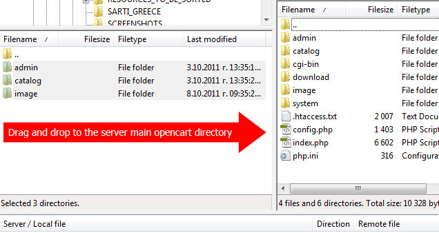

“RetailUniverse” - Premium OpenCart theme by Dimitar Koev v1.0
“RetailUniverse” - Premium OpenCart theme v1.0
Created: 28/11/2011
By: Dimitar Koev - the AlThemist
Email: office@mgdesign.eu
Thank you for purchasing my theme. If you have any questions that are beyond the scope of this help file, please feel free to email via my user page contact form here. Thanks so much!
Table of Contents
- Overview
- Installation
- HTML Structure
- CSS Files and Structure
- JavaScript
- PSD Files
- Sources and Credits
1) Overview - - top
RetailUniverse is a very advanced OpenCart theme suitable for various kind or e-commerce web sites. The theme is coming with totally reworked layout and huge amount of JS visual effects. The theme is not only visually appealing, but also built with the modern e-commerce tendencies and best SEO practices in mind. Whether you’re looking for a new skin for your existing Opencart based store or a template to modify for your client, RetailUniverse is the right choice.
RetailUniverse is highly customizable theme loaded with huge ammount of control options as well as some unique for OpenCart features.
- 3 sliders - Nivo slider, Custom LiSlider and Piecemaker 2 3D slider
- 3 menu types - Universe Custom menu, Classic 3 level drop-down menu and the OpenCart Default menu
- 3 different skins
- 2 types of product image preview - QloudZoom and FancyBox
- Custom Roundabout featured slider
- Integrated social features - Custom Facebook Like Box, Custom Twitter feed slider, AddThis Social Share feature with Google+, Facebook and Twitter share buttons
- Direct Chat/Call to Skype feature added in contacts page for more flexible customer experience.
- Extensive Theme Control Panel with huge ammount of customization options
- 6 editable areas
- Unlimited colors and backgrounds
- Boxed or full width layout
- 190 Google fonts available for headings and some page elements
Before we start, lets take a look on the folder structure of the theme. All theme files are placed in the FILES_TO_UPLOAD folder. The FILES_TO_UPLOAD folder consists of 3 more folders for diferent types of theme assets:
- Admin - contaning all custom admin features
- catalog -containing all theme files, custom controller, language files and the theme specific CSS and JS files
- Image - containing the theme thumbnail and some image handling core files
2) Installation - top
The installation of the theme is fairly simple. You only need to drag the three folders (admin, catalog, image) from FILES_TO_UPLOAD to the main opencart directory on you server. There are several custom core files which would need to be replaced.

There are known issues with FTP clients for Mac computers which replaces the existing folders instead of merging with the theme folders. I would strongly recommend you to use FileZilla if you are using a Mac computer
2.1) Activating and Settings - top
When the theme files are uploaded you would need to activate your store modules and the custom "RetailUniverse Theme Controls" modules. This module is the theme's option panel. Here you can control some settings of the theme.
- Layout and skin settings
- Color Settings
- Font Settings
- Background Settings
- Twitter Username
- Facebook User Id
2.2) Skins and layouts - top
RetailUniverse theme could use full width or boxed layout. Also, there are 3 separate basic skins to choose from.
The Default Light skin is optimized for ligther backgrounds and the Dark skin is optimized for dark backgrounds. There is also a Shady skin with more visual appealing elements like shadows, transparencies etc. Choose the skin which suits your content colors best. All 3 skins are fully customizable and only have the basic stylings optimized for content over dark or light backgrounds.
2.3) Colors, fonts and backgrounds - top
You can now set the colors and backgrounds for the main layout elements (headings, links, titles, module boxes, body background color, body background pattern, footer background etc.).
There are 25 background patterns to choose from. Upload of custom background is not included, so if you want to use your own image, you would need to replace one of the existing image files with your own.
RetailUniverse theme comes loaded with 187 Google fonts for use with titles and some other page ellements (e.g. prices)
There are also fields for Twitter Username and Facebook User Id and Skype User Name.
All settings have their default values if the theme options module is not enabled or options are not set.
If you are happy with the basic design and you don't want to use custom styles, leave the fields blank or disable the module.
Keep in mind that the layout, skin, twitter, Skype and facebook options would require the module to be enabled even if there are no custom colors and backgrounds set.
2.4) Social media features - top
If you don't have a twitter account or you just don't want to use it, leave the field blank and the twitter field would not be displayed in the pre-footer area.
RetailUniverse theme comes with custom social share features. There are Google +1, twitter and Facebook share buttons in the product page.
If there is a facebook ID filled in the textfield, custom facebook like box would automatically appear in footer, displaying 13 random fans, total number of fans and the "like" button.
How to set-up the facebook like box:
First - go to your FB fan page an click on the EDIT button on the right:
Now check the URL in browser adrress bar, copy the ID number and paste it in the corresponding field in the RetailUniverse theme options panel:
Skype Chat/Call function
If enabled, this feature would give your customers the possibility to start a chat or call with you directly from your site. The skype button is located in the Contacts page left column. You can configure the Skype feature to start a chat or a call by the select box in the Theme control options module.
The theme options pannel would be updated regullary with new features and more fonts. Ceck for updates and download the new version when it is available.
2.5) Image Settings - top
Before you start using your store with the RetailUniverse theme, image settings must be edited with the following values:
2.6) Modules recommended settings: - top
- This theme can use left or right column on all pages except for the Home page, the Product page, the Product compare page and the Contacts page.
Do not activate both left AND right columns on a single page as there is not enough space for both of them - Recommended image settings for all product related modules (e.g Featured, Latest, Special and Bestsellers) are 180x180 px for modules activated in Content Top or Content Bottom areas and 60x60px for modules activated in Left or Right column.
- This theme is using 3 types of Slideshow modules. The standard Nivo Slideshow module, Custom Li Slider module and Piecemaker2 3D slider. The original slideshow module was kept intact in order to ensure Multi-Store configurations using other themes simultaneously would work correct. Maximum Recommended width for the slideshow modules - 948px. For the Piecemaker slider module, make sure the "Slider size" settings are the same as the "Image size" settings. However, it is recommended to use the built in slider settings which you can see when you hit the "Add module" button in Piecemaker edit mode.
- Recommended maximum width for the banners when activated in Content Top or Content Bottom area is 948px. For the banners in left and right column, the default "cycle" function of the system is used. The only limitation here is the banner width of 220px, which is the actual width of the left/right column.
- If enabled in Content Top or Content Bottom area, the featured products module would work as a Roundabout rotator. The system automatically generates the recommended image size and there are no additional settings required. If enabled in left or right column, the module is using the default system settings.
2.7) Li jQuery Slider module: - top
Li jQuery Slider module is advanced image rotator with slide thumbnails and more than 140 transitions. The slider works the same way like the default OpenCart slideshow. You must first create a banner set with the recommended image size in System>Design>Banners, and than apply an instance of the Li Slider module to the banner set.
2.8) Typography columns: - top
This theme comes with the stylesheets required for displaying typography columns in text areas (information pages). As the default rich text editor of OpenCart doesn't allow using custom functions or shortcodes, you must use the CODE VIEW mode of the text editor and manually add the columns you want to use.
Here is the list of column sizes
A div element with class "clear" must be added after every last div element (e.g. div class="one_half last")
3) HTML Structure - top
The main HTML structure of the template consists of 4 main containers containing all page ellements:
- Header
- Content Holder
- Pre-Footer
- Footer
All 4 containers are wrapped in one main div with ID #container
Every one of the main 4 containers have a full width and and a subcontainer with class .inner for the content

Header
The header div contains all navigation ellements of the template:
- Logo
- Main menu for pages
- Category menu
The main menu is divided by two pieces for the left and right side of the logo. In order to achieve the centered effect, the left menu
if floated to the right and the right menu is floated to the left.Both parts are based on Unordered lists.
Every item in the main menu, could have a fading drop-down submenu. It is based on nested unordered lists and the fading effect for the submenu is controlled by JavaScript function.
The category menu is a 3 level drop-down menu powered by jQuery custom script. The menu is again based on Unordered list with nested list for the sub-menus. The structure of the menu is as follows:
Where "children" is a second level (sub-menu) and "children2" is a third level (sub-sub-menu) menu.
The drop down effect is again controlled by custom jQuery script.
Content
Most of the page ellements are placed in a container div with class "box". The "box" container have two main parts: Heading title (h2 with a specific class assigned for the line effect) and the real container with class "box-content". All important parts of every page segment is placed within the "box-conten" div.
Example
Featured Roundabout slider
The featured slider is using a complex structure of html ellements powered by Roundbout JS script.
The slider is Unordered list and every product in it is wrapped in a list item "li". There are many relatively and absolute positioned ellements in every product contains, thus changes in the structure are not recommended.
IMPORTANT: For the correct work of the Roundabout slider, make sure you always have EVEN number (2,4,6,8 etc.) of featured products. Otherwise, the roundabout script could cause some browsers to freeze!!!.
Roundbout slider structure
Product listings
The product listings in modules and category view are using a combination of complex HTML/CSS techniques and JavaScript. The products are presented by a picture with a pricetag, and hidden info pannel, visible on hover. The sliding effect of the info pannel is powered by custom jQuery script.
Here is the basic structure of the product listings:
All other page ellements are using the same principles except the JS functionality which will be explaned a bit later.
4) CSS files and structure - top
The theme comes with several CSS (stylesheet) files grouped in the stylesheet folder:
- stylesheet.css - the main CSS file containg the layout styling for the light skin (default).
- stylesheet_dark.css - the main CSS file containg the layout styling for the dark skin (default).
- cloud-zoom.css - custom skinned version of the CloudZoom jQuery plugin used in product page
- carousel.css - a custom skinned version of the jQuery plugin jcarouses
- facebook.css - a custom skinned version FB like box plugin
There are more plugin-speciffic CSS files in the "js" folder. These CSS files are critically important for the correct work of the plugins and changes in them are not recommended.
- css.tipsy.css - js\tipsy.
- prettyPhoto.css - js\prettyphoto\css
- jquery.lightbox-0.5.css - js\lightbox-0.5\css
- skin.css - js\li-slider\skins\Trend
If you would like to edit or change any color, font, or style of any elements in the template, you must edit the general CSS file (stylesheet.css). If you would like to change the general color for links for example, you would cnahge the following:
a, a:visited {
color: #9D0043;
text-decoration: underline;
cursor: pointer;
}
If you find that your new style is not overriding, it is most likely because of a specificity problem. Scroll down in your CSS file and make sure that there isn't a similar style that has more weight.
e.g.
#header .div5 a.toplinks {
color: #7C7C7C;
float: left;
font-size: 14px;
margin-right: 2px;
padding: 10px 8px;
text-align: center;
text-decoration: none;
}
So, to ensure that your new styles are applied, make sure that they carry enough "weight" and that there isn't a style lower in the CSS file that is being applied after yours.
5) JavaScript - top
This template is heavili loaded with both custom JS functions and free jQuery plugins. All JS files are placed in a separate folder called "js". The list of files is as follows:
- jquery-1.5.2.min.js
- jquery-ui-1.8.9.custom.min.js
- tabs.js
- jquery.roundabout.min.js
- jquery.jcarousel.min.js
- jquery.cycle.lite.1.0.min.js
- cloud-zoom.1.0.2.min.min.js
- custom_scripts.js
- jquery.tipsy.js
- jquery.prettyPhoto.js
- jquery.tipsy.js
- jquery.prettyPhoto.js
- li-slider-1.1.min.js
- li-slider-animations-1.1.min.js
- jquery.easing.1.3.js
- jquery.lightbox-0.5.min.js
some of the jQuery plugins are heavily customized and changes in their files are not recommended.
All JS functions related to the theme content management are placed in custom_scripts.js or inline in the HTML files if required. The custom_scripts.js file is responsible for the main functions like menus, sliding effects, tooltips, image fading effects, and the SlideFeatures panel (Cart, Currency switcher, Language switcher, Search bar)
For example - If you would like to edit the speed of the sliding info pannel for the product listings, you would need to open custom.scripts.js and find lines 23-29:
$("div.prod_hold").hover(function () {
$('.info', this).css({visibility: "visible",display: "none"}).slideDown('normal'); //the speed could be 'normal', 'fast', 'medium' or 'slow'
}, function () {
$('.info', this).css({visibility: "hidden"});
});
If you would like to change the speed for the fading cart in header:
$("li.side_cart").hover(function () {
$('#cart', this).fadeIn(500); //speed of the fading effect in milliseconds
}, function () {
$('#cart', this).fadeOut(200); //speed of the fading effect in milliseconds
});
Controlling the Li slider:
The Li slider is advanced jQuery slider plugin with hundreds of options and more than 140 transitions. The call function is placed inside the slideshow.tpl file:
The full list of options and features could be found here: - Li Slider
Roundabout Featured slider:
The roundabout Featured slider must be called with a JS function before the closing body tag. This is a customized variation of the default roundabout function and changes are not recommended. For the full information about Roundabout jQuery plugin, visit Roundabout project site by Fred LeBlanc
$(document).ready(function() {
var interval;
$('ul#myRoundabout')
.roundabout({
'btnNext': '.next_round', //the class of the HTML ellement used as button "next"
'btnPrev': '.previous_round' //the class of the HTML ellement used as button "previous"
}
)
.hover(
function() {
clearInterval(interval);
},
function() {
interval = startAutoPlay();
});
interval = startAutoPlay();
});
function startAutoPlay() {
return setInterval(function() {
$('ul#myRoundabout').roundabout_animateToPreviousChild();
}, 3000); // the pause between rotations
}
Tooltips
This theme is using the "Tipsy" jQuery plugin. If you want to add a tooltip to any ellement, you only need to put the tip content in the ellement's title tag and add the ellement class in the tooltip function in custom_scripts.js - line 84.
For more options and advanced use of the Tipsy plugin, visit the oficial page at jquery.com
6) PSD Files - top
This theme is comming with huge customization options and creating a PSD to cover them is not possible. There is one PSD file included in the package for the Price tag.:
- pricetag.psd
7) Sources and Credits - top
I've used the following images, icons or other files as listed.
- Li jQuery Slider by Spotnil
- Piecemaker2 3D slider by Modularweb
- Roundabout Slider by Fred LeBlanc
- Tipsy jQuery Plugin
- prettyPhoto jQuery Plugin by Stephane Caron
- Google Fonts
- Tileable patterns by Webtreats
Once again, thank you so much for purchasing this theme. As I said at the beginning, I'd be glad to help you if you have any questions relating to this theme. No guarantees, but I'll do my best to assist. If you have a more general question relating to the themes on ThemeForest, you might consider visiting the forums and asking your question in the "Item Discussion" section.
Dimitar Koev, metaGraphics Design Studio